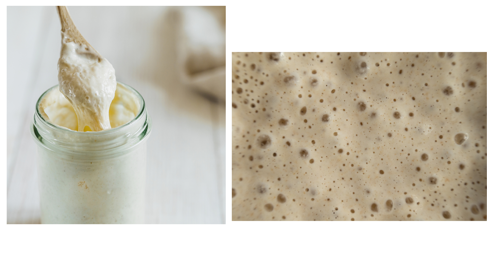
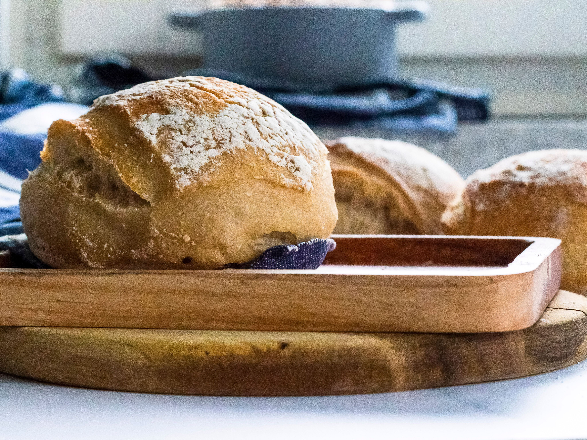

Ingen synlig aktivitet
Kan være normalt i begyndelsen. Fortsæt planen, og giv kulturen tid.
FORSTÅ DE SMÅ TEGN
Du behøver ikke kunne alle ordene. Her er det vigtigste at vide om blandingen i dit glas — og det, du skal kigge efter.
Surdej er en blanding af mel og vand med naturlig gær og mælkesyrebakterier. Gæren danner luft, mens bakterierne bidrager med syrlighed.
Det kaldes fermentering: mikroorganismerne omsætter noget af melets næring. Derfor kan blandingen få bobler, vokse og dufte syrligt.
Du beholder en lille del af surdejen og tilsætter frisk mel og vand. Det giver kulturen ny næring. Resten fjernes, så glasset ikke bliver fyldt med stadig mere surdej.
SAMME GLAS · TRE OBSERVATIONER
Tegnene kan komme på forskellige tidspunkter. Et stille glas i starten er ikke det samme som en mislykket surdej.

Kan være normalt i begyndelsen. Fortsæt planen, og giv kulturen tid.
Et tegn på aktivitet. Bobler alene betyder ikke, at surdejen er klar til bagning.

Se efter pålidelig fordobling over gentagne fodringer — ikke kun én livlig dag.
En tidlig aktivitetsbølge kan aftage. Det er ikke i sig selv tegn på, at kulturen er moden. Temperatur, mel og den nye kultur påvirker tempoet.
ET SENERE SKRIDT

En stabil, moden surdej kan senere bruges til brød og boller. At bage er et nyt forløb med dej og hævetid. Lige nu koncentrerer vi os om at få din kultur godt i gang.
Tilbage til guidenSPØRGSMÅL OG SVAR
Ingen synlig aktivitet kan være normalt i begyndelsen. Fortsæt guidens fodringsplan, og giv kulturen tid.
Du beholder en lille del af kulturen og giver den frisk mel og vand. Resten fjernes, så glasset ikke bliver fyldt med stadig mere surdej.
Nej. Læg låget løst på glasset, mens surdejen udvikler sig ved stuetemperatur.
Bobler alene er ikke nok. Se efter pålidelig fordobling over gentagne fodringer, mange bobler og en behageligt syrlig duft. Se trin 4 for hele beskrivelsen.
GUIDENS GRUNDLAG
Metode: King Arthur Baking, “Sourdough Starter” (februar 2026). Udvikling: The Perfect Loaf. Sikkerhed: King Arthur Baking. Fagligt grundlag gennemgået 6. oktober 2026.